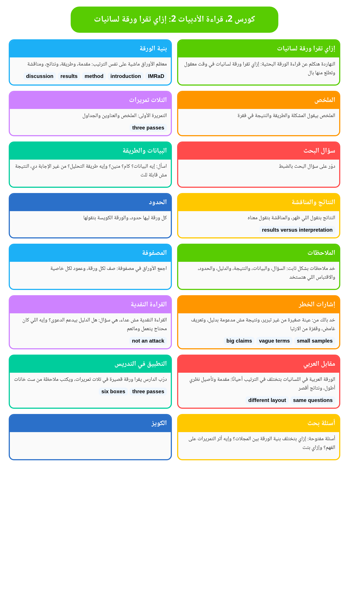

آداب الإنجليزية
: قواعد وجرامر وشعر وأساطير
⭐
0
🔥
استمر!
📄
كورس 2، قراءة الأدبيات 2: إزاي تقرا ورقة لسانيات
📊
المستوى: من الصفر
كورس ٢ درس ٦١
💬
القواعد الأكاديمية
📄 حمّل PDF الدرس
🧠 الخريطة الذهنية PDF
🧠 شوف الخريطة الذهنية للدرس

→
الدرس اللي قبله
كل دروس الكورس